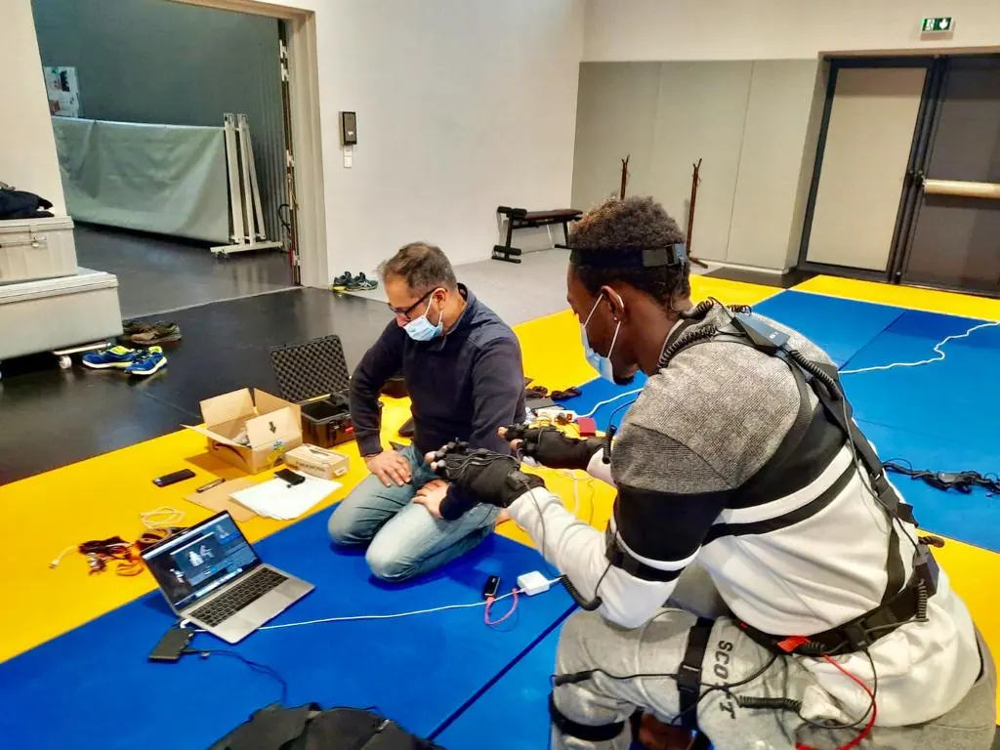
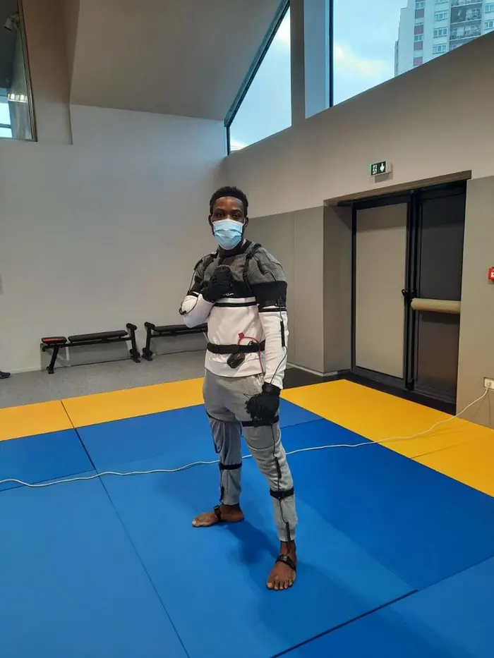

Pour les sportifs
Améliorer sa technique, corriger ses erreurs, visualiser sa performance, la comparer à celle d'experts et progresser.
Accueil › Motion Capture
Quand les arts martiaux rencontrent la capture de mouvement : le Digital Fighting Studio.
Chez ADFJ, la capture de mouvement enregistre et analyse les gestes des sportifs pendant l'entraînement.
Capteurs, caméras ou systèmes de suivi enregistrent les mouvements en temps réel ou les reproduisent en modèles 3D. Un investissement important en équipements et en logiciels : c'est un vrai atout de le trouver à Asnières.

Améliorer sa technique, corriger ses erreurs, visualiser sa performance, la comparer à celle d'experts et progresser.
Analyser la performance de ses sportifs, fournir un retour précis, corriger les erreurs techniques et adapter les entraînements.
Suivre individuellement les progrès, repérer les points à améliorer et intégrer ces données à la planification de l'entraînement.
Les systèmes de capture de mouvement aident les sportifs en situation de handicap à mieux comprendre leur gestuelle, leur posture et leur équilibre, et à ajuster leur technique. En montrant leurs réussites et leurs progrès, ils renforcent la confiance en soi et encouragent à continuer.
Cela favorise l'inclusion et la participation sociale. ADFJ développe aussi en laboratoire un système de perception de la réalité pour les personnes malvoyantes ou non-voyantes.

La capture de mouvement permet de créer des activités ludiques et interactives, plus motivantes, pour les sportifs en situation de handicap comme pour les autres. Elle pourrait bientôt permettre de s'entraîner dans des environnements virtuels réalistes et interactifs.
Notre studio utilise B.o.B, un package d'analyse biomécanique composé d'un modèle musculo-squelettique humain, qui intègre les données de notre solution de capture. Il permet de visualiser les tensions articulaires et musculaires, de déterminer l'intensité de travail d'un muscle ou l'amplitude d'une articulation. Ces solutions servent notamment lors de séances de gymnastique adaptée pour des personnes en institutions spécialisées ou médicalisées.

Une question, une démonstration, un projet ? Contactez le studio.
06 87 75 74 82 · adfj@orange.fr